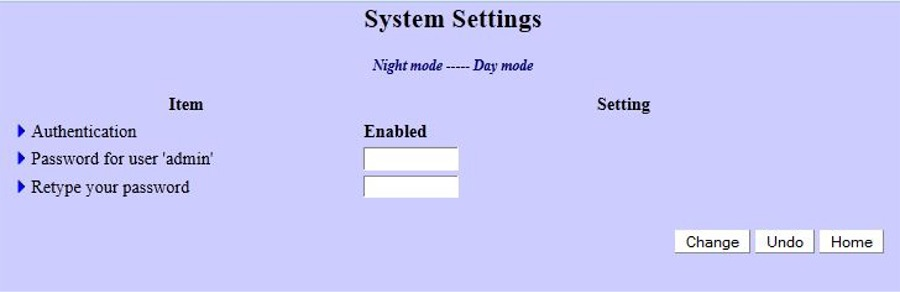

|  |
| On this web page you can change password the for the Gemini-2 from blank to something else |
|
| If your Gemini-2 is connected Via Ethernet, turned ON, and Responds to http://gemini/system.cgi then this link will open this page in the Gemini-2 web interface, after prompting for a log-in. |